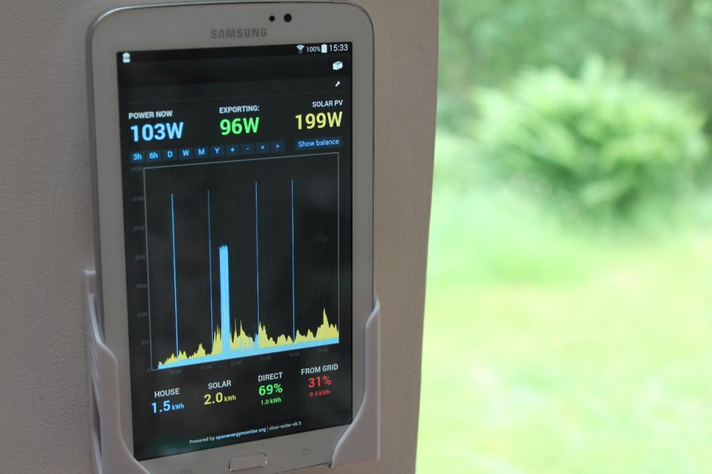
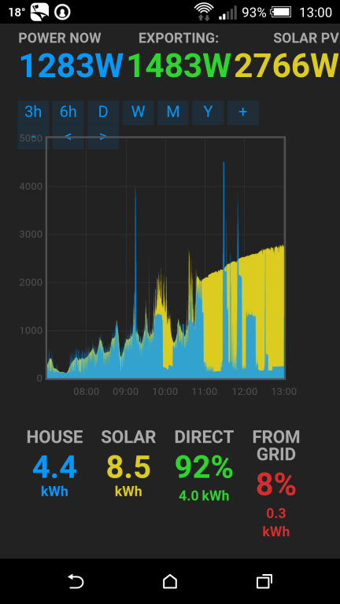
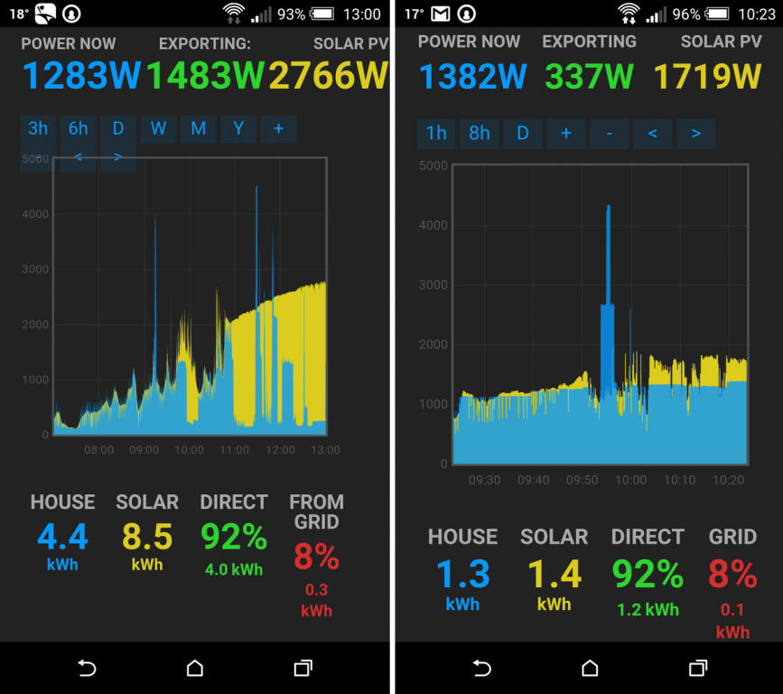

The "My Solar" web app is an excellent piece of work and is just what I need to
monitor my home. Suggestions to make it even better:
- 24-hour rolling window which advances automatically (already mentioned by Trystan in another thread).
- 1-hour rolling window i.e. "H" next to "D" and "W". On a tablet or phone, zooming in to see the newest data is too difficult.
- Balance (import/export) is for me the most important number. Make it the same size as the power readings, like my tweaked screenshot below.
- At night I get a random small solar reading and the balance is now unimportant. When solar power is less than 20W, go into "night mode" and blank the Balance and Solar numbers.
Steve
Re: Wishlist for Emoncms "My Solar" page
Adding a "H" option to show 1 hour of data is a one-line change in emoncms on the Pi ....
File /var/www/emoncms/Modules/app/mysolarpv/mysolarpv.html
Insert a line above the "D" option at line 56:
The time parameter is the number of days, and 0.04167 is 1/24 which will show 1 hour of data.
Re: Wishlist for Emoncms "My Solar" page
Thanks Steve, I've been keeping your suggestions in mind and now that I have a tablet dedicated to being an energy display with the display on all the time, have a better platform to test and develop on, I've made the changes you suggested to make it work better as an always on display and I've added a few others:
Here's the result:

Upgrading
to upgrade on the emonpi or latest emonbase image navigate to the admin tab in emoncms and then run the update tool. Otherwise the app's module can be downloaded and updated using git:
http://github.com/emoncms/app
Re: Wishlist for Emoncms "My Solar" page
Trystan,
Jolly good! Will download the update soon. Many thanks.
Re: Wishlist for Emoncms "My Solar" page
Trystan,
Nice work on the "MySolar" app. The larger fonts make it much easier to read.
Suggestion: Make the solar night time "noise" a user adjustable parameter. My system produces ~45W of "noise" during non-production hours. From what I've seen on the forum, other users have the same issue, i.e. more than 10W of "noise" during the night.
Cheers!
Bill
Re: Wishlist for Emoncms "My Solar" page
The improved app works well (I'm using an early Nexus 7 tablet as a permanent display).
More ideas ....
Add in some common place:
// Like toFixed() but alter precision to show 2 significant digits
function myFixed(n)
{
var val=Math.abs(n);
if (val > 99.999) return n.toFixed(0)
else if (val > 1.999) return n.toFixed(1)
else if (val > 0.1999) return n.toFixed(2)
else return n.toFixed(3)
}
Then in mysolarpv.js, replace for example
total_solar_kwh.toFixed(1)
with
myFixed(total_solar_kwh)
Steve
Re: Wishlist for Emoncms "My Solar" page
Looks good on a tablet, but would the additional information/buttons render OK on a smaller smartphone (and be selectable), or are you using different stylesheets to format the page according to the device/browser used?
Also, agree that 10W noise level threshold is too low. I tried numerous different values before settling on 20W which works fine for me, although I suspect that the noise level will be different from one inverter to another.
Paul
Re: Wishlist for Emoncms "My Solar" page
Dont forget converting graphical apps to dashbords will allow to better introduce config changes and mix other feed data on the same screen. See: http://www.openenergymonitor.net/emon/node/10766
Re: Wishlist for Emoncms "My Solar" page
Looks good on a tablet, but would the additional information/buttons render OK on a smaller smartphone (and be selectable)
Hi Paul,
Viewing the My Solar App on my Motorola phone with a 4.3 inch screen is actually usable! The buttons are selectable without any problems and the index values render OK. One anomaly I noticed was the Show balance button is not even with the rest of the buttons (on my phone it's displayed on the graph frame), but once clicked, and the text changes to hide balance, the button moves up into alignment with the rest of the row.
One other thing, the overall height necessitates a vertical scroll to be able to view the HOUSE, SOLAR, DIRECT, and FROM GRID labels and associated values.
Bill
Re: Wishlist for Emoncms "My Solar" page
Thanks Bill, that was my concern as there seems to be a lot on detail on that one line. Maybe should be renamed to 'Balance' to fit, or limit the selectable time periods??
Paul
Re: Wishlist for Emoncms "My Solar" page
Renaming it to Hide Bal/Show Bal would do it. I like having the 3hr and 6hr buttons. ;-)
Re: Wishlist for Emoncms "My Solar" page
My noise level from 12 Renesola Micro Inverters is around 38W. Using -38W and Allow Positive gets rid of it and curiously doesn't seem to screw up the lower readings.
Re: Wishlist for Emoncms "My Solar" page
I just updated and now I have no graph on Chrome / IE / Iphone6 Safari. The Solar Text is also off the right hand side of the screen on the iphone.
On the PC clicking Dashboard > My Electric gives a readable graph with a black background, however
Dashboard > My Solar gives a white space where the graph should be
Dashboard > My Electric > My Solar gives a white space where the graph should be
Fortunately I had an old copy of the Apps folder kicking around :-)
Re: Wishlist for Emoncms "My Solar" page
I use the emoncms.org website "My Solar" page all the time. Will all of these recent updates be applied to the website pages?
Thanks.
Re: Wishlist for Emoncms "My Solar" page
I too use the emoncms.org website and graphs for the My Solar are all blank and values 0.
The settings page is also not visible so I don't know if the feed values need to be amended.
Re: Wishlist for Emoncms "My Solar" page
I updated the emoncms.org mysolar and myelectric app's yesterday, @bruce_miranda are you able to click on the spanner icon to bring up the settings page? can you refresh and resave the settings?
Re: Wishlist for Emoncms "My Solar" page
I had the same symptoms at emoncms.org/mysolarpv -- white background and zero values.
The spanner icon was hard to find because it was white on white. Re-saving the settings made no difference but normal service was resumed after I changed one of the feed numbers, saved, then saved again with the original number.
Re: Wishlist for Emoncms "My Solar" page
Yes same for me. The mysolar app isn't working anymore. White background and zero figures. It was working until yesterday.
Re: Wishlist for Emoncms "My Solar" page
I had the White space and zero values initially. Following reboot, problem solved (In my case anyway).
Personally I would like to read the House,Solar, Direct and From Grid as all values in a line and not split between values and percentages halfway along with the remaining values in smaller tpe below. Problem here is we are into preferences, and to make these configurable would ruin the simplicity of the app.
Paul G.
Re: Wishlist for Emoncms "My Solar" page
Thanks. Did this and all OK now, back to a Black background.
Re: Wishlist for Emoncms "My Solar" page
Yes it's back to the black background and reconfigured display but it's not updating, at least for me it's not.
Re: Wishlist for Emoncms "My Solar" page
Just to add to my previous post. It's not updating for me in IE11. Tried clearing browser cache but to no effect.
It is working ok in Chrome but initially I got a white background and no graphs after clearing browser cache I now have it working with new layout and data updating.
Re: Wishlist for Emoncms "My Solar" page
Solar app update works fine for me in both Firefox and Chrome after clearing browser history and then restarting the browser. Also works OK using Silk on Kindle Fire HD.
Jez
Re: Wishlist for Emoncms "My Solar" page
I've fixed the config issue that presented as a white screen with no values with the solarpv app. Fixed on emoncms.org and changes available for download.
Re: Wishlist for Emoncms "My Solar" page
This is what it looks like on a HTC One M8 phone.
Any chance of shortening 'FROM GRID' to 'GRID'
Also, as the < & > navigation icons have now rolled onto 2 lines, they are overlapped by the graph layer, and therefore not selectable.
Paul

Re: Wishlist for Emoncms "My Solar" page
I made a few changes to make the solar app display better on smaller devices such as smartphones.
I have made a pull request for consideration, but if anybody wants, the git clone url is https://github.com/Paul-Reed/app.git
Paul

Re: Wishlist for Emoncms "My Solar" page
Looks great!, just merged the pull request, thanks a lot!
Re: Wishlist for Emoncms "My Solar" page
Great work Trystan/Paul - this is a great little *app* - use it almost daily!
BTW - my 3.12kW panels just ticked over 1yr since installation - total generation of 3800kWh @ 10.4kWh/day - very happy with performance! Sorry - a bit OT but a little excited :)!
Re: Wishlist for Emoncms "My Solar" page
I love this app and use it a lot, great work. I'd love to be able to scroll back in time, but this isn't the easiest with the current navigation controls. Would anyone be interested in a date selection control? I'm likely to develop this locally but could share the patch.
Re: Wishlist for Emoncms "My Solar" page
This looks like a really nice app, i am not using solar power myself but its a really nice way to visualize the energy image.
I just want to drop in one very nice visualization i saw once for solar energy.
It looks like a clock, and shows bars in a circular motion. The bars grow higher the time of the day with high production. This simple widget just gives a quick overview that can be used in dashboards. It can be used for anything but the reason i liked it for solar is because it shows in a nice way what hours are producing electricity, and it can quickly be read.
//J
Re: Wishlist for Emoncms "My Solar" page
I'm enjoying using the My Solar app on my ipad and it looks great.
However it doesn't work on my Blackberry Classic using the native browser as I get no graph trace.
A couple of other things would be nice:
When zoomed to one day by hitting the "D" button, it would be nice if the graph started and finished at 00:00 so it actually represents a single date rather than a 24 hour period. This would make the generation and consumption stats showing make more sense and allow easier visual comparison between consecutive days.
Building on the above, is there some way of showing the dates for the period shown on the graph?
Finally, it is possible to stop the graph from showing data after the current time? After zooming and scrolling through the data I always end up wanting to leave the graph showing the current live situation but find it impossible to do so without zooming into the future, as pictured, or refreshing. The inclusion of the spurious data makes the stats meaningless.
Thanks!
Re: Wishlist for Emoncms "My Solar" page
I too would like to see when hitting "D" that it shows the current day from 00:00 to the current time. Showing data from the previous day only bias's the data.
thanks for a great app.